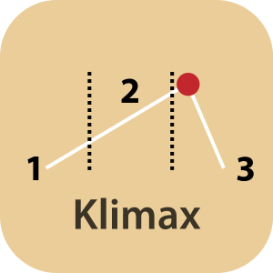
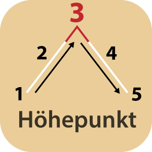

Klimax/Höhepunkt: Dritter Akt in der Fünfakt- und in der Dreiaktstruktur. Die Konflikte verdichten sich zu ihrem Höhepunkt, wodurch auch die Spannungskurve der Geschichte ihren emotionalsten Punkt erreicht. Im Ergebnis muss der Held der Geschichte häufig eine folgenschwere Entscheidung treffen, die den Ausgang der Geschichte massiv beeinflusst. Handelt es sich um eine Geschichte mit tragischem Ausgang, werden hier die Weichen für diesen Verlauf gestellt.

